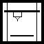

Macro 3D Printer 3mf Workflow/ru
|
 |
| Description |
|---|
| Макрос FreeCAD для экспорта плавных 3MF файлов с сохранением всех настроек печати для слайсера и автоматическим рабочим процессом для вашего любимого слайсера. Macro version: 00.02 Last modified: 2026-02-14 FreeCAD version: All Download: Toolbar icon Macro 3D_Printer_3mf_Workflow
3D_Printer_3mf_Workflow_ConfigIni.FCMacro |
| Author |
| 2cv001 |
| Download |
| Toolbar icon
Macro 3D_Printer_3mf_Workflow 3D_Printer_3mf_Workflow_ConfigIni.FCMacro |
| Links |
| Macros recipes How to install macros How to customize toolbars |
| Macro Version |
| 00.02 |
| Date last modified |
| 2026-02-14 |
| FreeCAD Version(s) |
| All |
| Default shortcut |
| None |
| See also |
| None |
{kind=link}
{kind=link}
Описание
Макрос FreeCAD для экспорта плавных 3MF файлов с сохранением всех настроек печати в слайсере и автоматическим рабочим процессом для вашего любимого слайсера.
Temporary code for external macro link. Do not use this code. This code is used exclusively by Addon Manager. Link for optional manual installation: Macro
# This code is copied instead of the original macro code
# to guide the user to the online download page.
# Use it if the code of the macro is larger than 64 KB and cannot be included in the wiki
# or if the RAW code URL is somewhere else in the wiki.
from PySide import QtGui, QtCore
diag = QtGui.QMessageBox(QtGui.QMessageBox.Information,
"Information",
"This macro must be downloaded from this link\n"
"\n"
"https://raw.githubusercontent.com/2cv001/3D_printer_3mf_workflow/main/3D_Printer_3mf_Workflow.FCMacro" + "\n"
"\n"
"Quit this window to access the download page")
diag.setWindowFlags(QtCore.Qt.WindowStaysOnTopHint)
diag.setWindowModality(QtCore.Qt.ApplicationModal)
diag.exec_()
import webbrowser
webbrowser.open("https://raw.githubusercontent.com/2cv001/3D_printer_3mf_workflow/main/3D_Printer_3mf_Workflow.FCMacro")
Более подробное описание:
https://github.com/2cv001/3D_printer_3mf_workflow/blob/main/README.md
Назначение
Этот макрос автоматизирует и улучшает процесс 3D-печати от FreeCAD до вашего слайсера, позволяя:
- Создавать гладкие 3D-печати без видимых граней.
- Сохранять настройки печати (температура, поддержки, скорость…) так, чтобы они оставались связанными с проектом FreeCAD.
- Запускать внешние программы для упрощения всего процесса: FreeCAD → слайсер → печать.
Этот макрос является преемником macro 3d_printer_workflow.
The 3D_Printer_Workflow macro was already capable of producing smooth, facet‑free exports. Its main limitation was that it relied on STL files, which cannot store slicer or printing parameters.
This macro uses .3mf files, allowing all print settings to be saved and reused.
To retain the core functionality of the previous macro, this version also provides an STL export option with adjustable tessellation parameters, allowing smooth mesh generation just like before.
Ограничение
The current version can export only a single object, but you can work around this by using links — for example, a Simple Group — to combine multiple objects into one.
Принцип сглаживания
{kind=link}
With visible facets
{kind=link}
Without visible facets
The macro exports the selected objects to a 3MF file using the specified tessellation parameters (LinearDeflection and AngularDeflection). It generates temporary mesh objects for the export process and automatically removes them afterward.
Launching other programs or commands
The macro allows you to define custom commands that will be executed automatically after the 3MF file is generated. This feature is optional and can be used to automate additional steps in your workflow, such as:
- copying the generated 3MF file to another location
- turning on your 3D printer through a smart plug
- turn a light on
- pre‑heating the build plate
- sending an HTTP request to your home automation system
- launching a script or external tool
Principle diagram
{kind=link}
Настройка
A dedicated helper macro is provided to make configuration easy. Your commands are stored in an .ini file used by the workflow.
The ⚙️ button in the options window allows you to both install and open the configuration macro (3D_Printer_3mf_Workflow_ConfigIni.FCMacro).
- Fill in the fields in the configuration window
- Hover your mouse over a column title to display help tooltips
- Each command you define will be executed in order after the 3MF file is produced.

Using %PROJECT%, %PROJECTDIR%, and %PROJECTNAME% in user commands
When you define custom post‑processing commands in the workflow, you can use three special placeholders. These placeholders are automatically replaced by values derived from your FreeCAD project file.
Доступные заполнители
Placeholders and their meaning:
- %PROJECT%: Full path of the FreeCAD project without extension
- %PROJECTDIR%: Folder containing the FreeCAD project
- %PROJECTNAME%: Project file name without extension
Примеры
Copy the generated 3MF file next to the project :
copy "%PROJECT%.3mf" "%PROJECTDIR%/backup/%PROJECTNAME%.3mf"
Run a script stored in the project folder :
python "%PROJECTDIR%/scripts/postprocess.py" "%PROJECT%.3mf"
Send an HTTP request using the project name :
Turn on a Shelly smart plug Gen 1
Gen2
Or if your device have a password :
curl -u admin:yourpassword "http://192.168.xxx.xx/rpc/Switch.Set?id=0&on=true"
Применение
Больше деталей по ссылке https://github.com/2cv001/3D_printer_3mf_workflow
Обсуждение
Английский : https://forum.freecad.org/viewtopic.php?t=102503
Французский : https://forum.freecad.org/viewtopic.php?t=103419
Скрипт
Код
ver 00.02 2026/02/14 by 2cv001 3D_Printer_3mf_Workflow.FCMacro